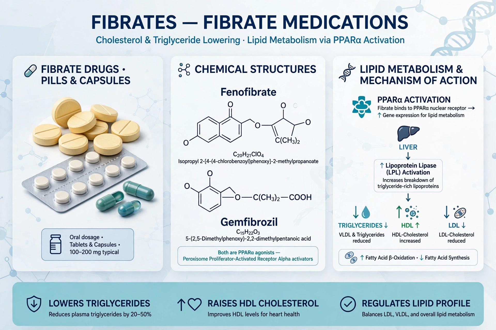

Fibrates are a class of lipid-lowering drugs, derivatives of fibric acid, used mainly to reduce triglycerides and raise HDL cholesterol. Common examples are fenofibrate, gemfibrozil, bezafibrate and clofibrate (now largely discontinued).

| Fibrates | |
|---|---|
| Class | Lipid-lowering agents |
| Mechanism | PPAR-alpha agonists |
| Examples | Fenofibrate, gemfibrozil, bezafibrate |
| Main use | Hypertriglyceridemia |
Fibrates activate the nuclear receptor PPAR-alpha, increasing lipoprotein lipase activity, fatty-acid oxidation and clearance of triglyceride-rich lipoproteins, while increasing apolipoproteins A-I and A-II and thus HDL.
They are used for severe hypertriglyceridemia (to reduce pancreatitis risk) and in mixed dyslipidemia, often combined with statins. Trials such as FIELD and ACCORD-Lipid found limited overall cardiovascular benefit except possibly in patients with high triglycerides and low HDL. Clofibrate was withdrawn after excess mortality in a WHO trial.
Side effects include gastrointestinal upset, gallstones, raised creatinine (fenofibrate), and increased risk of myopathy/rhabdomyolysis when combined with statins — especially gemfibrozil. They can potentiate warfarin.